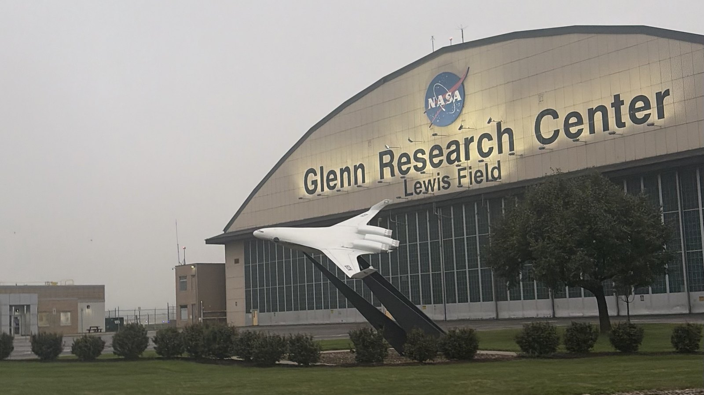
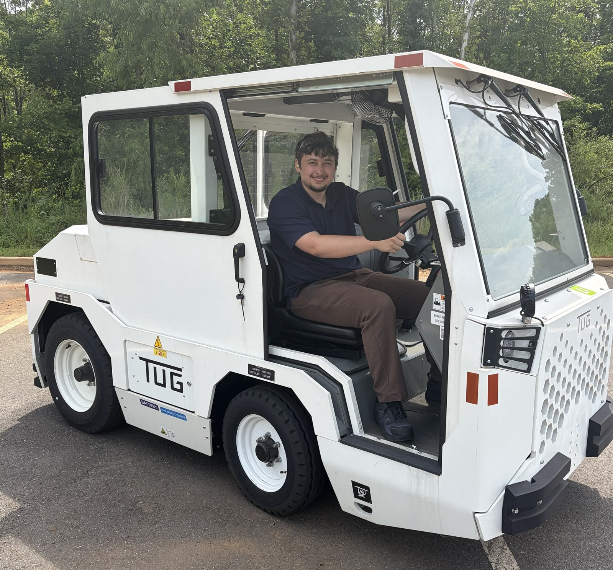

Sheet 01
Internships

Fig. 01 + Add PhotoNASA Glenn Research Center — Cleveland, OHAug–Dec 2026
Internship
UAV Flight Control Intern
Diagnostics and Controls Branch · Distributed electric propulsion UAV based on NASA's SUSAN Electrofan
- Implementing custom MATLAB/Simulink flight control algorithms on Pixhawk flight computers running PX4 for a 12 ft wingspan distributed electric propulsion UAV with 16 electric fans and thrust vectoring
- Developing control reallocation algorithms in MATLAB that redistribute thrust commands across the remaining fans after a fan or thrust-vectoring failure, and tested 8,000 fan-failure cases using Monte Carlo simulation
- Modeling flight dynamics and powertrain in MATLAB/Simulink and X-Plane, and performing system identification on flight test data with Kalman filtering and airspeed, IMU, and GPS sensor fusion
- Integrating algorithms into PX4 in a Linux environment; invited to return in spring 2027 to continue the project
MATLAB/SimulinkPX4PixhawkKalman FiltersSystem IDX-Plane

Fig. 02 + Add PhotoTextron GSE — Cartersville, GAJun–Aug 2026
Internship
Mechanical Design Engineer Intern
Ground support equipment electrification
- Designed assemblies in Siemens NX and produced build-ready drawings, including a hinged door for the MX4 electric baggage tractor and access doors for the 660 belt loader refresh — with hands-on sheet metal design and prototyping
- Applied GD&T and tolerance stack-up analysis alongside DFA/DFM reviews to validate manufacturability before production release
- Ran fit checks and physical prototype testing, including parking-brake sensor location testing and access-door motion verification
Siemens NXGD&TSheet MetalDFA/DFM
KSU Office of Research — Marietta, GAFeb–May 2026
Internship
Research Development Intern
Funding and grant support for KSU faculty
- Conducted funding searches and budget analyses to identify external grant opportunities for KSU faculty
- Designed and built web pages that communicated funding opportunities and research resources to faculty
- Built NIH R15 and R16 grant resources, including checklists, to help faculty prepare proposals
Funding SearchBudget AnalysisGrant ResourcesSharePointWeb Design